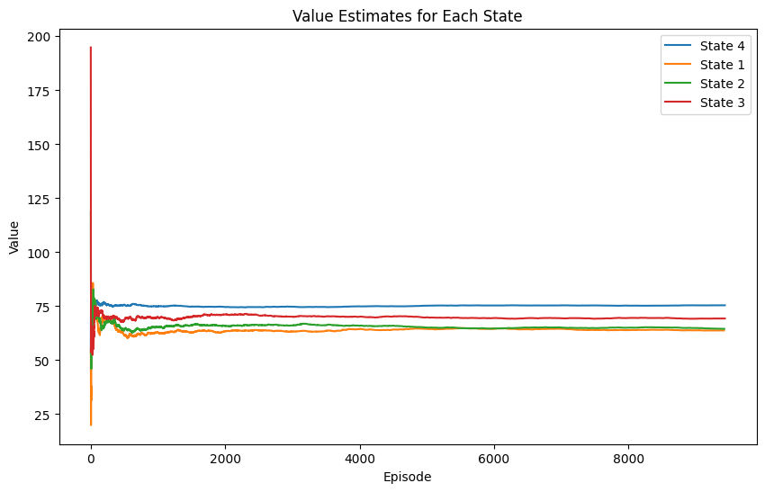
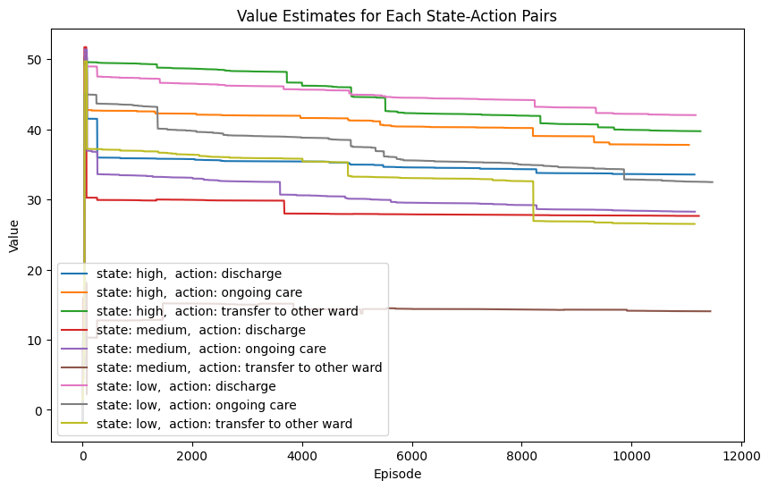

import math
import latexify
import pandas as pd
import numpy as np
import seaborn as sns
import matplotlib.pyplot as plt
from collections import defaultdict
import randomMonte Carlo Prediction
First-visit MC prediction, for estimating \(V \approx v_{\pi}\)
r = {i: np.exp(i)-1 if i < 5 else i+3 for i in range(1, 10)}def Value_S(n_episodes,n_states, T, rewards, gamma = 1):
V = defaultdict(float)
v_s = defaultdict(list)
returns= defaultdict(list)
for e in range(n_episodes):
steps = [random.randint(1, n_states) for _ in range(T)]
visited_states = []
G = 0
for s in reversed(steps):
G = gamma*G + rewards[s]
if s not in visited_states:
visited_states.append(s)
returns[s].append(G)
V[s] = np.mean(returns[s])
v_s[s].append(np.mean(returns[s]))
return V, returns, v_smy_val, returns, v_s = Value_S(10000, 4, 10, r)fig, ax = plt.subplots(figsize=(10, 6))
for key, values in v_s.items():
ax.plot(values, label=f'State {key}')
ax.set_xlabel('Episode')
ax.set_ylabel('Value')
ax.set_title('Value Estimates for Each State')
ax.legend()
plt.show()
Monte Carlo Control
Monte Carlo ES (Exploring Starts), for estimating \(\pi \approx \pi_*\)
import numpy as np
from collections import defaultdict
def initialize(states, actions):
pi = {s: np.random.choice(actions) for s in states} # Arbitrary policy
Q = {(s, a): 0.0 for s in states for a in actions} # Arbitrary action-value function
Returns = defaultdict(list) # Empty list for each state-action pair
return pi, Q, Returns
def generate_episode(pi, env, start_state, start_action):
episode = []
state = start_state
action = start_action
while True:
next_state, reward, done, _ = env.step(action)
episode.append((state, action, reward))
state = next_state
if done:
break
action = pi[state]
return episode
def monte_carlo_es(env, states, actions, gamma=1.0, episodes=1000, epsilon=0.1):
pi, Q, Returns = initialize(states, actions)
for _ in range(episodes):
start_state = np.random.choice(states)
start_action = np.random.choice(actions)
episode = generate_episode(pi, env, start_state, start_action)
G = 0
visited_state_action_pairs = set()
for t in range(len(episode) - 1, -1, -1):
state, action, reward = episode[t]
G = gamma * G + reward
if (state, action) not in visited_state_action_pairs:
visited_state_action_pairs.add((state, action))
Returns[(state, action)].append(G)
Q[(state, action)] = np.mean(Returns[(state, action)])
pi[state] = max(actions, key=lambda a: Q[(state, a)])
return pi, Q
# Example usage with a hypothetical environment
class DummyEnv:
def reset(self):
return 0 # Starting state
def step(self, action):
next_state = np.random.choice([0, 1])
reward = np.random.choice([0, 1])
done = np.random.choice([True, False])
return next_state, reward, done, {}
# Define states and actions
states = [0, 1]
actions = [0, 1]
# Create environment
env = DummyEnv()
# Run Monte Carlo ES
pi, Q = monte_carlo_es(env, states, actions)
print("Optimal Policy:", pi)
print("Action-Value Function:", Q)Estimated Policy:
State 0: Action 1
State 1: Action 0
State 2: Action 0
State 3: Action 0
Estimated Q-values:
State 2: [-2. -2.]
State 1: [-4. -4.]
State 0: [-5. -4.]
State 3: [0. 0.]states = [0, 1, 2, 3]
actions = [0, 1]
current_state = 0Monte Carlo Control without Exploring Starts
On-policy first-visit MC control (for \(\epsilon\)-soft policies), estimating \(\pi \approx \pi_*\)
import numpy as np
from collections import defaultdict
import random
class SimpleEnv:
def __init__(self):
self.states = [0, 1, 2, 3]
self.actions = [0, 1]
self.current_state = 0
def reset(self):
self.current_state = random.choice(self.states)
return self.current_state
def step(self, action):
if self.current_state == 0:
if action == 0:
self.current_state = 1
return 1, -1, False, {}
else:
self.current_state = 2
return 2, -2, False, {}
elif self.current_state == 1:
self.current_state = 2
return 2, -2, False, {}
elif self.current_state == 2:
self.current_state = 3
return 3, -2, True, {}
elif self.current_state == 3:
return 3, 0, True, {}
def epsilon_soft_policy(Q, state, n_actions, epsilon):
policy = np.ones(n_actions) * epsilon / n_actions
best_action = np.argmax(Q[state])
policy[best_action] += (1.0 - epsilon)
return policy
def on_policy_first_visit_mc_control(env, num_episodes, gamma=1.0, epsilon=0.1):
Q = defaultdict(lambda: np.zeros(len(env.actions)))
returns = defaultdict(list)
policy = {s: epsilon_soft_policy(Q, s, len(env.actions), epsilon) for s in env.states}
for _ in range(num_episodes):
# Generate an episode following the policy
episode = []
state = env.reset()
done = False
while not done:
action = np.random.choice(env.actions, p=policy[state])
next_state, reward, done, _ = env.step(action)
episode.append((state, action, reward))
state = next_state
# Calculate returns and update Q and policy
G = 0
visited_state_action_pairs = set()
for t in reversed(range(len(episode))):
state, action, reward = episode[t]
G = gamma * G + reward
if (state, action) not in visited_state_action_pairs:
visited_state_action_pairs.add((state, action))
returns[(state, action)].append(G)
Q[state][action] = np.mean(returns[(state, action)])
best_action = np.argmax(Q[state])
for a in env.actions:
if a == best_action:
policy[state][a] = 1 - epsilon + epsilon / len(env.actions)
else:
policy[state][a] = epsilon / len(env.actions)
return policy, Q
# Example usage
env = SimpleEnv()
num_episodes = 1000
policy, Q = on_policy_first_visit_mc_control(env, num_episodes)
# Print the estimated policy and Q-values
print("Estimated Policy:")
for state in policy:
print(f"State {state}: {policy[state]}")
print("\nEstimated Q-values:")
for state in Q:
print(f"State {state}: {Q[state]}")Estimated Policy:
State 0: [0.475 0.525]
State 1: [0.525 0.475]
State 2: [0.525 0.475]
State 3: [0.525 0.475]
Estimated Q-values:
State 0: [-5. -4.]
State 1: [-4. -4.]
State 2: [-2. -2.]
State 3: [0. 0.]Incremental Implementation (Off-policy Prediction via Importance Sampling)
Off-policy MC prediction (policy evaluation) for estimating \(Q \approx q_\pi\)
class Policy:
def __init__(self, policy_func):
self.policy_func = policy_func
def __call__(self, state):
return self.policy_func(state)
def prob(self, action, state):
if self.policy_func(state) == action:
return 1.0
else:
return 0.33 # Assuming equal probability for random policy
# class RandomPolicy(Policy):
# def prob(self, action, state):
# return 1.0 / len(self.actions)
# Define the target policy function
def target_policy(state):
"""Discharge if state is 'low', ongoing care if 'medium', transfer if 'high'."""
if state == 'low':
return 'discharge'
elif state == 'medium':
return 'ongoing care'
else:
return 'transfer to other ward'
# Define the behavior policy function
def behavior_policy(state):
"""Randomly choose an action."""
return np.random.choice(['discharge', 'ongoing care', 'transfer to other ward'])
# Create policy instances
target_policy_instance = Policy(target_policy)
behavior_policy_instance = Policy(behavior_policy)
# behavior_policy_instance = RandomPolicy(behavior_policy, actions)
def generate_episode(env, policy):
"""
Generate an episode following the given policy.
Args:
env: The environment.
policy: The policy to follow.
Returns:
episode: A list of (state, action, reward) tuples.
"""
episode = []
state = env.reset()
done = False
while not done:
action = policy(state)
next_state, reward, done, _ = env.step(action)
episode.append((state, action, reward))
state = next_state
return episode
def off_policy_mc_prediction(env, target_policy, behavior_policy, gamma=1.0, num_episodes=10000):
"""
Off-policy Monte Carlo prediction for estimating Q ≈ q_π.
Args:
env: The environment.
target_policy: The target policy π.
behavior_policy: The behavior policy b.
gamma: Discount factor.
num_episodes: Number of episodes to run.
Returns:
Q: The state-action value function.
"""
Q = defaultdict(lambda: {action: np.random.rand() for action in ['discharge', 'ongoing care', 'transfer to other ward']})
C = defaultdict(lambda: {action: 0.0 for action in ['discharge', 'ongoing care', 'transfer to other ward']})
Q_values = defaultdict(lambda: {action: [] for action in ['discharge', 'ongoing care', 'transfer to other ward']})
for episode in range(num_episodes):
episode_data = generate_episode(env, behavior_policy_instance)
G = 0
W = 1
for t in reversed(range(len(episode_data))):
S_t, A_t, R_t1 = episode_data[t]
G = gamma * G + R_t1
C[S_t][A_t] += W
Q[S_t][A_t] += (W / C[S_t][A_t]) * (G - Q[S_t][A_t])
Q_values[S_t][A_t].append(Q[S_t][A_t])
W *= target_policy_instance.prob(A_t, S_t) / behavior_policy_instance.prob(A_t, S_t)
if W == 0:
break
return Q, Q_values
# Example environment class
class HospitalEnv:
def __init__(self):
self.state_space = ['low', 'medium', 'high'] # Example state space
self.state = random.choice(self.state_space)
def reset(self):
self.state = random.choice(self.state_space)
return self.state
def step(self, action):
if action == 'discharge' and self.state == 'low':
reward = +4 # Discharge and state is low
elif action == 'discharge' and self.state == 'medium':
reward = +3 # Discharge and state is medium
elif action == 'discharge' and self.state == 'high':
reward = +2 # Discharge and state is high
elif action == 'ongoing care' and self.state == 'low':
reward = -1 # Ongoing care and state is low
elif action == 'ongoing care' and self.state == 'medium':
reward = 0 # Ongoing care and state is medium
elif action == 'ongoing care' and self.state == 'high':
reward = +1 # Ongoing care and state is high
elif action == 'transfer to other ward' and self.state == 'high':
reward = -2 # Transfer and state is high
elif action == 'transfer to other ward' and self.state == 'low':
reward = -1 # Transfer and state is high
else:
reward = -1 # Any other action-state combination
done = np.random.rand() < 0.1 # End episode with 10% probability
self.state = random.choice(self.state_space) # Randomly transition to a new state
return self.state, reward, done, {}
# Create the Hospital environment
env = HospitalEnv()
# Run the off-policy MC prediction algorithm
Q, Q_V = off_policy_mc_prediction(env, target_policy_instance, behavior_policy_instance, num_episodes=10000)
# Print the estimated action-value function
for state, actions in Q.items():
print(f"State: {state}, Actions: {actions}")State: high, Actions: {'discharge': 33.559139188410256, 'ongoing care': 37.78793859362933, 'transfer to other ward': 39.7422146010955}
State: medium, Actions: {'discharge': 27.65488269887011, 'ongoing care': 28.262722308488133, 'transfer to other ward': 14.057149044582227}
State: low, Actions: {'discharge': 42.037880067550425, 'ongoing care': 32.478764126731264, 'transfer to other ward': 26.51464256869759}fig, ax = plt.subplots(figsize=(10, 6))
for key, values in Q_V.items():
for k, v in values.items():
ax.plot(v, label=f'state: {key}, action: {k}')
ax.set_xlabel('Episode')
ax.set_ylabel('Value')
ax.set_title('Value Estimates for Each State-Action Pairs')
ax.legend(loc='lower left')
plt.show()
Off-policy Monte Carlo Control
Off-policy MC control, for estimating \(\pi \approx \pi_*\)
class Policy:
def __init__(self, policy_func, actions):
self.policy_func = policy_func
self.actions = actions
def __call__(self, state):
return self.policy_func(state)
def prob(self, action, state):
if self.policy_func(state) == action:
return 1.0
else:
return 1.0 / len(self.actions)
def soft_policy(state, actions):
return np.random.choice(actions)
def generate_episode(env, policy):
episode = []
state = env.reset()
done = False
while not done:
action = policy(state)
next_state, reward, done, _ = env.step(action)
episode.append((state, action, reward))
state = next_state
return episode
def off_policy_mc_control(env, gamma=1.0, num_episodes=10000):
actions = ['discharge', 'ongoing care', 'transfer to other ward']
Q = defaultdict(lambda: {action: np.random.rand() for action in actions})
C = defaultdict(lambda: {action: 0.0 for action in actions})
pi = defaultdict(lambda: np.random.choice(actions))
for state in env.state_space:
pi[state] = max(Q[state], key=Q[state].get)
for episode in range(num_episodes):
episode_data = generate_episode(env, lambda state: soft_policy(state, actions))
G = 0
W = 1
for t in reversed(range(len(episode_data))):
S_t, A_t, R_t1 = episode_data[t]
G = gamma * G + R_t1
C[S_t][A_t] += W
Q[S_t][A_t] += (W / C[S_t][A_t]) * (G - Q[S_t][A_t])
pi[S_t] = max(Q[S_t], key=Q[S_t].get) # Find the key with the maximum value
if A_t != pi[S_t]:
break
W *= 1.0 / (1.0 / len(actions))
return Q, pi
# Example environment class
class HospitalEnv:
def __init__(self):
self.state_space = ['low', 'medium', 'high'] # Example state space
self.state = random.choice(self.state_space)
def reset(self):
self.state = random.choice(self.state_space)
return self.state
def step(self, action):
if action == 'discharge' and self.state == 'low':
reward = 1 # Discharge and state is low
elif action == 'ongoing care' and self.state == 'medium':
reward = 1 # Ongoing care and state is medium
elif action == 'transfer to other ward' and self.state == 'high':
reward = 1 # Transfer and state is high
else:
reward = -1 # Any other action-state combination
done = np.random.rand() < 0.1 # End episode with 10% probability
self.state = random.choice(self.state_space) # Randomly transition to a new state
return self.state, reward, done, {}
# Create the Hospital environment
env = HospitalEnv()
# Run the off-policy MC control algorithm
Q, pi = off_policy_mc_control(env, num_episodes=10000)
# Print the estimated action-value function and policy
for state, actions in Q.items():
print(f"State: {state}, Actions: {actions}")
print("\nPolicy:")
for state, action in pi.items():
print(f"State: {state}, Action: {action}")import numpy as np